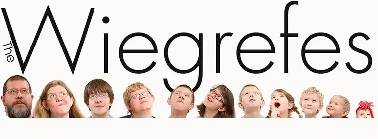

I’m so pleased that I was able to finagle my friend Karla Wiegrefe into writing up these Lenten thoughts. Now that we’re in the middle place of Lent, we all need a little encouragement. You’ll find Karla’s words just the thing, I think! And by the way, in the photo below, she’s the one second to left, surrounded by her beautiful family. Roxane
 |
| Renegade Photography, Fargo |
{kind=link}
By Karla Wiegrefe
My most meaningful Lent happened the year I wasn’t the one to choose my penance.
That year, our family came down with a severe upper respiratory illness that lasted all through Lent until Easter. Our youngest child was hospitalized after having two episodes where he stopped breathing. It was a truly stressful time with a few terrifying moments.
I’d gone into Lent that year with a list about a mile long, including limiting television viewing, daily prayer time with the children, attending daily Mass, giving up candy.
As that first week passed, it became obvious other plans were in store.
After becoming contagious, we surrendered plans for daily Mass. With ailing children lined up on the couch, daily television viewing became survival, and prayer time increased to near constant as we longed for healing and for our youngest especially to beat the illness.
That year, I learned something very vital about Lent and Easter.
Lent truly is about dying to oneself. How much greater the opportunity to do so when we had to cancel everything off our calendars and our days were measured in the rhythm of rotating sick children onto Mama’s lap for comfort and cuddles and nights interrupted by little ones seeking solace?
And Easter brought with it a flood of hope. We felt like we were emerging from a fog into a time of sunshine and fresh air, and we did so with a renewed appreciation for good health and a deeper love for each other.
That Lent, I realized something about the liturgical year as several churches celebrate it.
Before every Christmas comes an Advent, much like the time when a pregnant woman prepares for the birth of her child, filled with excitement and perhaps a bit of joyful apprehension as she ponders the unknowns to come.
Christmas is the fulfillment of that preparation, the holding of the new infant in her arms and the possibilities that stretch out beyond.
And before every Easter there is a Lent, so much like the times when we sit at the sickbed or the deathbed of a beloved, where we witness their suffering and suffer along with them, longing for their healing or even their release from this life into the next.
I remember my grandma lingering on in her suffering during the weeks leading up to her death. It was a time of waiting and observing, of standing watch at her deathbed, of healing for our family as old wounds were resolved and forgiveness flowed.
Ultimately, when Grandma died, we all felt sorrow at her passing, but also great joy knowing she was in a better place, one where she would suffer no more. That is Easter.
Lent is a time of diving down into what is most essential in life. It strips away all the unimportant things. That’s the inspiration I bring into my Lents of today.
I look at my life leading up to Lent and ask where I am out of balance. Is my calendar too full of things that don’t matter? Am I really meeting the basics in my life? How are my relationships with my kids and my husband and God? Have we given to others less fortunate than ourselves? What do I need to cut out or add in?
I find that if we pick something that really matters for Lent, it is often easier to see it through to the end because we know it is important.
If it’s something I still find myself struggling with, then I consider whether I took on too much, if a different approach might help, or if life has chosen an unexpected but more immediate and meaningful Lent for me.
When others ask me about Lent now, I tell them that Lent is Life. And sometimes Life gives you Lent, but other times, it comes more gently with options.
Seize those opportunities because Lent has the potentially to bless your life abundantly.
Wiegrefe, a Fargo mother of nine, wrote this column in an illness-induced delirium just as Lent 2013 was beginning.
A mother’s tip:
For “a really awesome resource for Lent,” for families, Wiegrefe suggests “Amon’s Adventure: A Family Story for Easter,” a picture book that can be purchased on Amazon, written by Arnold Ytreeiede. “He writes great adventure books that have my kids begging to read the next chapter,” she said, noting, “This would be a great resource for those from any Christian background.”
http://www.amazon.com/Amons-Adventure-Family-Story-Easter/dp/0825441714
{kind=link}
{kind=link}